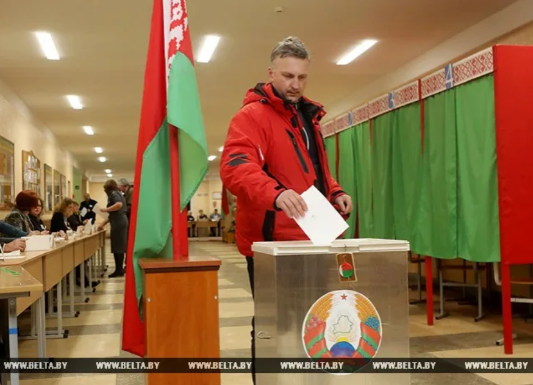
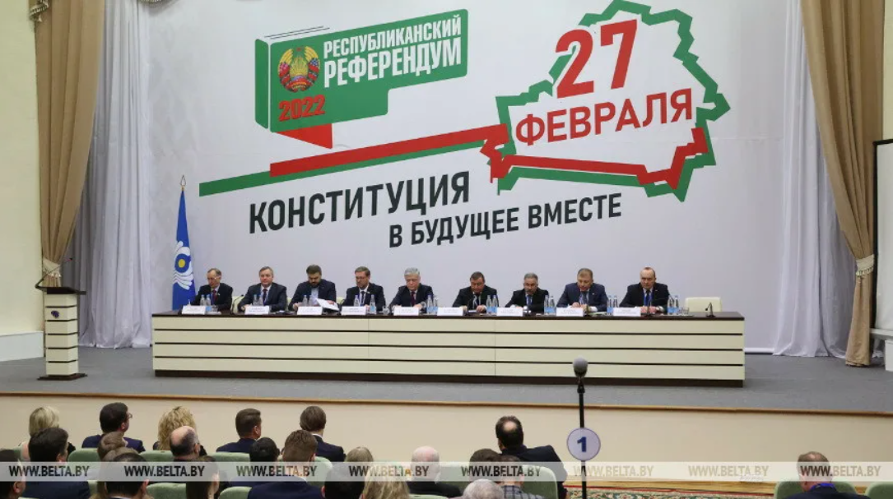
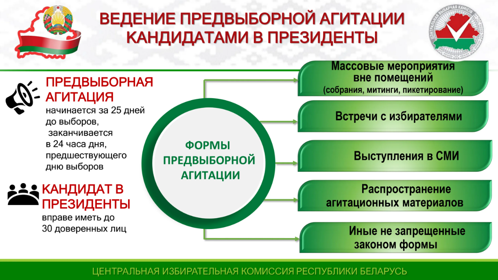
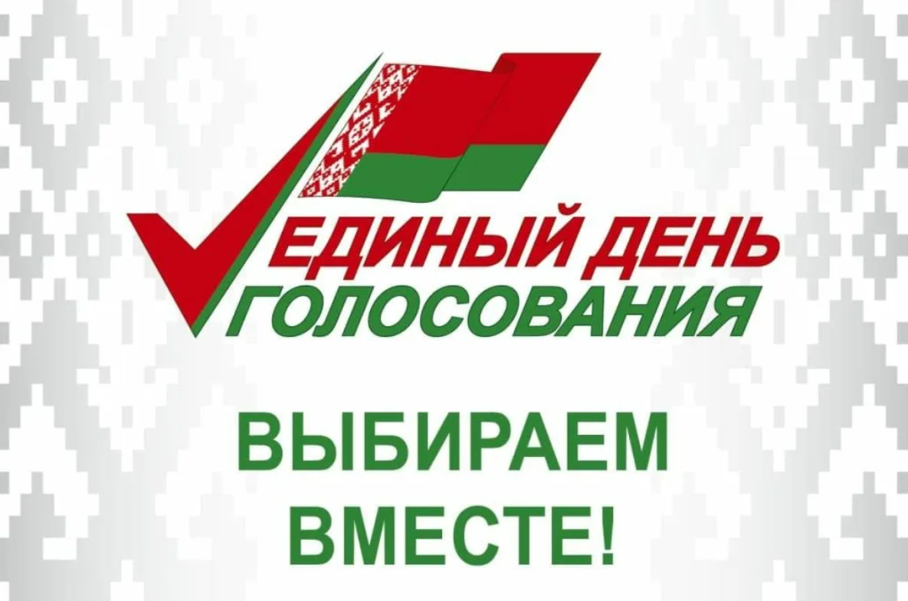

Раздел 1: Хроника выборов
Хроника выборов (1994–2025)
История президентских кампаний, ключевые даты и вехи развития суверенного государства.
ПодробнееИнформационный портал о становлении избирательной системы Республики Беларусь, этапах проведения президентских и парламентских выборов, ключевых референдумах и развитии предвыборных технологий.
Примечание: Подробные материалы и нормативные акты доступны на официальном ресурсе Центральной избирательной комиссии Республики Беларусь.

История президентских кампаний, ключевые даты и вехи развития суверенного государства.
Подробнее
Анализ важнейших плебисцитов, определивших государственное устройство и векторы развития.
Подробнее
Методы агитации, эволюция медиа-стратегий и работа с избирателями в разные периоды.
Подробнее
Современный этап электоральных реформ и обновление конституционных норм.
ПодробнееС 12 по 16 октября в Маниле (Республика Филиппины) проводилась 7-я Генеральная Ассамблея Всемирной ассоциации избирательных органов (A-WEB). В работе международного электорального форума приняла участие белорусская делегация во главе с заместителем Председателя ЦИК Беларусь Алексеем Башаном.
Подробнее →13 октября Председатель Центральной избирательной комиссии Игорь Карпенко посетил Брестский филиал частного учреждения образования «Колледж бизнеса и права», где выступил с открытой лекцией о функционировании избирательной системы нашей страны.
Подробнее →В рамках Соглашения о сотрудничестве между Центральной избирательной комиссией Республики Беларусь и Центральной комиссией Республики Кыргызстан по выборам и проведению референдумов белорусская сторона делится опытом по вовлечению молодежи в электоральную сферу.
Подробнее →Председатель ЦИК Беларуси Игорь Карпенко и начальник отдела организационной, финансовой работы и международного сотрудничества аппарата ЦИК Беларуси Сергей Шмарловский приняли участие в международном наблюдении за выборами депутатов Государственной Думы.
Подробнее →В Москве руководители избирательных органов стран ближнего и дальнего зарубежья обменялись опытом организации голосования в условиях современных вызовов. Главной темой обсуждения стало обеспечение стабильности избирательного процесса.
Подробнее →1–2 сентября Председатель Центральной избирательной комиссии Игорь Карпенко совершил рабочую поездку в Витебскую область, приуроченную к началу нового учебного года. В День знаний глава ЦИК разделил праздник с учащимися ГУО «Межевская средняя школа».
Подробнее →